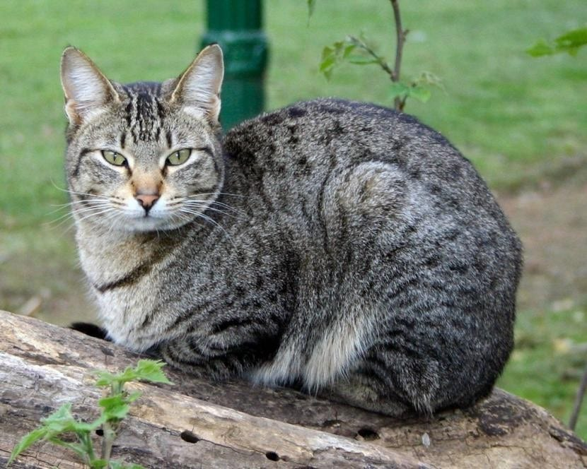
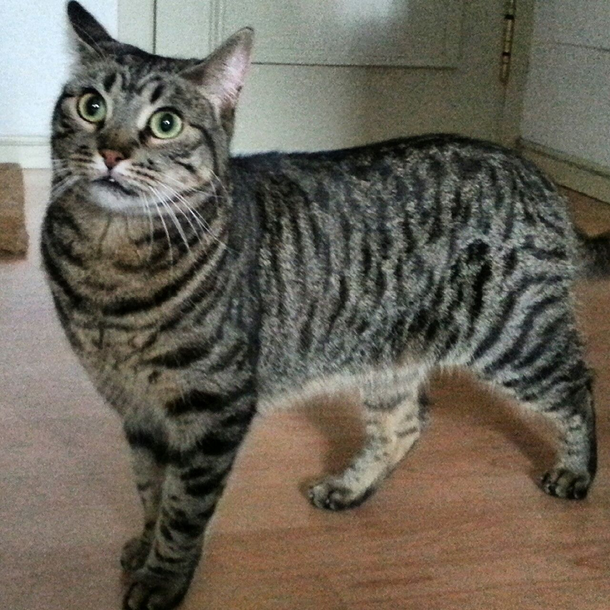

Volver a InicioGato Común Europeo |
||
OrigenSe supone que el gato común europeo proviene del gato salvaje africano, originario del norte de África. Esto se basa en las similitudes anatómicas de ambas razas. Los bigotudos llegaron a Europa en barco y pronto se hicieron muy comunes. Se emplearon para cazar ratones y ratas en las granjas. Se hicieron muy populares, sobre todo en Escandinavia, que en la actualidad es donde están la mayoría de los criadores. En 1926 ya se hablaba de esta raza en Finlandia y en 1947 en Suecia. La primera hembra europea registrada se llamaba Ujan y fue inscrita en la asociación de cría sueca SVERAK. Hasta poco antes de la introducción del estándar de la raza en 1982, el gato común europeo se asociaba con el british shorthair. Finalmente, en 1982 fue reconocido como raza independiente por la Fédération Internationale Féline (FIFe). Además, el gato común europeo está registrado en la World Cat Federation (WCF) bajo el nombre de celtic shorthair. Aún hoy en día, el gato común europeo se iguala al gato doméstico común. Pero, esto no es correcto. El gato común europeo es una raza independiente: tiene su propio estándar y pedigrí. Sin embargo, la clasificación de gato doméstico es sistemática: este término engloba multitud de razas. AspectoEl cuerpo de esta raza es musculoso, de pecho ancho y fuerte, piernas mediolargas y patas redondas. Desde un punto de vista anatómica, no difiere de un gato doméstico europeo. Su tamaño es de mediano a grande. Tiene una cabeza bastante grande en relación con el cuerpo, mientras que la cara tiene un aspecto redondo. La frente y el cráneo están ligeramente redondeados y los pómulos están bien desarrollados. Una de las pocas diferencias entre un gato doméstico y el gato europeo común es su respectivo pedigrí. CarácterLos europeos comunes son inteligentes, juguetones y muy cariñosos. En general son muy cercanos a las personas y pacientes con los niños. Sin embargo, son de todo menos tranquilos: debido a su pasado, el gato común europeo tiene un instinto cazador muy desarrollado y siempre está en busca de aventuras, pero aun así es apegado a los humanos. Por un lado, aprecia los ratitos de mimos con su persona vinculante, y por otro, siempre está listo para juegos extensos y corretear. Como gato doméstico, debido a la gran necesidad de ejercicio, requiere de mucho entretenimiento y variedad. Se siente muy a gusto como gato de exterior. Gracias a su equilibrada, independiente y cariñosa naturaleza es ideal como gato de familia. |

 |
|
Volver a InicioVolver Arriba |
||